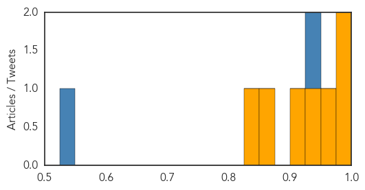

Dengue Fever
30-Day Web Trend
30-Day Twitter Trend
0 alerts, 0 warnings

Article Locations

Article Confidences

Top Articles:
- 0.976
- Declare national emergency in combating dengue pandemic ― Charles Santiago
- 0.975
- Dengue situation in coastal town described as alarming - Nation
- 0.901
- Revealed: Holiday hotspots included in world's most dangerous destinations to fall ill
- 0.897
- Revealed: World's most dangerous places to fall ill
- 0.675
- Genetically Modified Mosquitoes Have Few Proven Benefits, Too Many Risks
- 0.591
- Reducing Mosquitoes Is Vital to Human Health
Top Tweets:
-
No tweets found for Feb 23, 2015
Cholera
30-Day Web Trend
0 alerts, 0 warnings

30-Day Twitter Trend
3 alerts, 0 warnings

Article Locations

Article Confidences
Top Articles:
- 0.998
- Interview with Pedro Medrano Rojas, UN Senior Coordinator for the Cholera Response in Haiti
- 0.983
- What's Working: Public Health Progress Since the Haiti 2010 Earthquake
- 0.975
- Health partners appeal for funds to meet South Sudan’s priority needs in 2015 - South Sudan
- 0.940
- It’s sad Kenyans still die from cholera that can be avoided by washing hands - Kenya
- 0.922
- South Sudan: Health partners appeal for funds to meet South Sudan's priority needs in 2015
- 0.868
- Why cholera is spreading fast in Migori and Homa Bay counties - Kenya
- 0.835
- Drug-Resistant Bacteria: Part I
Top Tweets:
- 0.936
- RT: cholera is still a problem in Haiti - cases and deaths every week. @pih haiti saw >1300 cases in Nov/Dec 2014. More res…
- 0.526
- Outbreaks of cholera in the time of Ebola: pre-emptive action needed http://t.co/nS9eoexMyx